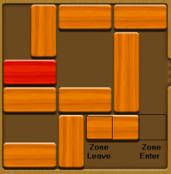

The Cat
Like many programmers, when I see a puzzle, I cannot help thinking "Can I devise an algorithm to solve that" ?
It is probably the same urge, that drives a cat crazy, when it sees something dangling, to play with it :)
Then I saw the Unblock Me puzzle, you can read about it here, and many have it on their Android phone.
Immediately, I started thinking about how to solve that game, too.
Of course, in a couple of days I managed to write a program, using a depth first search. I did the recursion, the backtracking, I kept a trace of values, like a Stack.
But when I ran it, it kept running, and running... and running...
It seemed that the space for searching was something big, almost like the central supermassive black hole of the galaxy :(
The Prune
So, i decided i need some imaginative pruning. That is, to eliminate some of the branches of that awful tree.
What came to my mind ?
When a piece moves, it enters (cover)a new zone, and leaves (uncover)an old zone.
These zones are, like a piece, the have a length, an orientation, and a position on the table. I thought these might be useful.

The decision functions for pruning
(some horror code will follow)
These functions decide whether I will continue to search from a node, or not.
Of course, I played with some functions, but two remained.
One says that
"For a move to be valid, it needs to be historically purposeful"
Good use was made for these zones I talked about.
So, this function, validates a move if some moves before( remember I keep track of moves) uncover a zone that is covered by this move(the one being tested).

Another function, tests whether
"between the current move and an older one of the same piece, are some moves that helps me to do these 2 moves ?"
So, if between current move, and an older move of the same piece, the pieces are moving unpurposefully(similar to the previous function) the move is invalid.
The idea is that, between the moves of the same piece, one must cover the uncovered zone of the oldest move, and another must leave a zone for the newest move to cover.
And also, the move that covers must be older that the one that uncovers.

Happy end
So, i ran the program, and voila ! It solves all the puzzles that I thrown at it.
Examples :
643
743
750
puzzles
The source code is a plain C# named unblme.CS, can be compiled with any .NET Framework's CSC
The command line to run this executable is unblme file.txt, where the input file is like this file.txt
Enjoy!